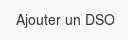
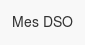

 dans la barre de navigation permet de créer un nouveau DSO vierge.
Le DSO sera identifié par le champ "Nom" au début du document.
Juste en desssous, on peut choisir de valider ou non le DSO. Cela permettra de pouvoir filter ultérieurement les DSO selon ce critère.
Attention : Ne pas oublier d'enregister en bas du formulaire !
Cela ce fait à partir de la liste des DSO. Il suffit de cliquer sur Voir dans la ligne du DSO voulu. Puis une fois sur la page du DSO, l'option "Modifier" est disponible au dessus du DSO. Vous pouvez alors modifier ce que vous voulez.
Avant d'enregister, vous avez la possibilité de cocher " Créer une nouvelle révision ou non". Si vous cochez la case, une nouvelle version du DSO sera créée. L'ancienne version ( avant vos changements ) sera sauvegardée, ansi que celle avec vos changements. Vous pouvez créer une infinité de versions.
Afin de voir la liste des DSO, il suffit de cliquer sur  dans la barre de navigation.
D'ici vous pouvez voir tout les DSO. Les commerciaux n'ont accès qu'à leurs propres DSO. Il suffit ensuite de cliquer sur "Voir" dans la ligne du DSO voulu afin d'accéder à sa modification et à la consultation des versions. Dans le sous-menu "révision", vous pouvez cliquer sur la date dans le tableau, afin de pouvoir la consulter.
En consultant un DSO, un lien "Télécharger un pdf" est disponible en dessous du nom du DSO